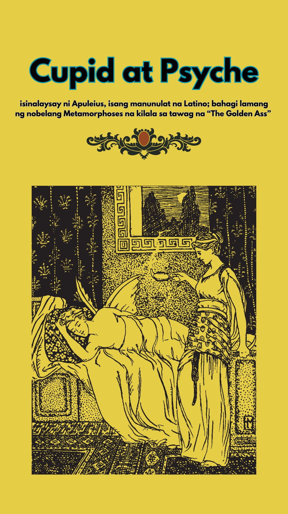
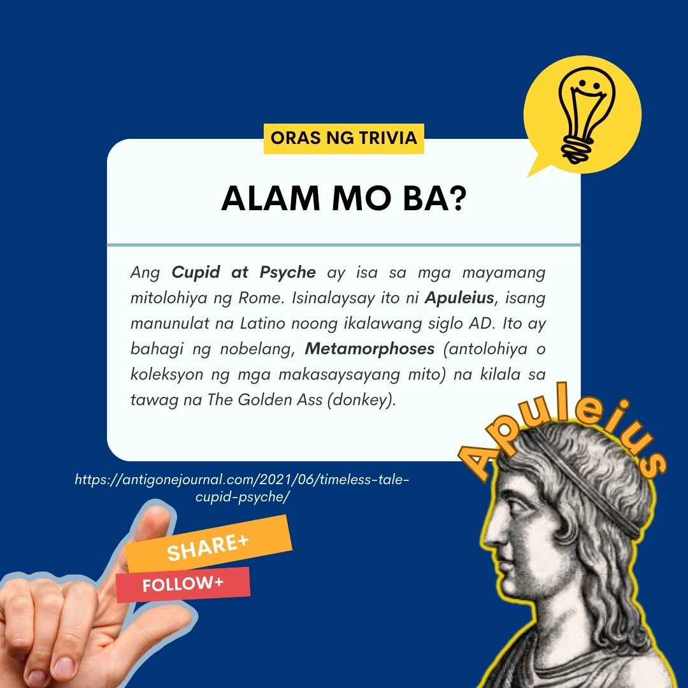
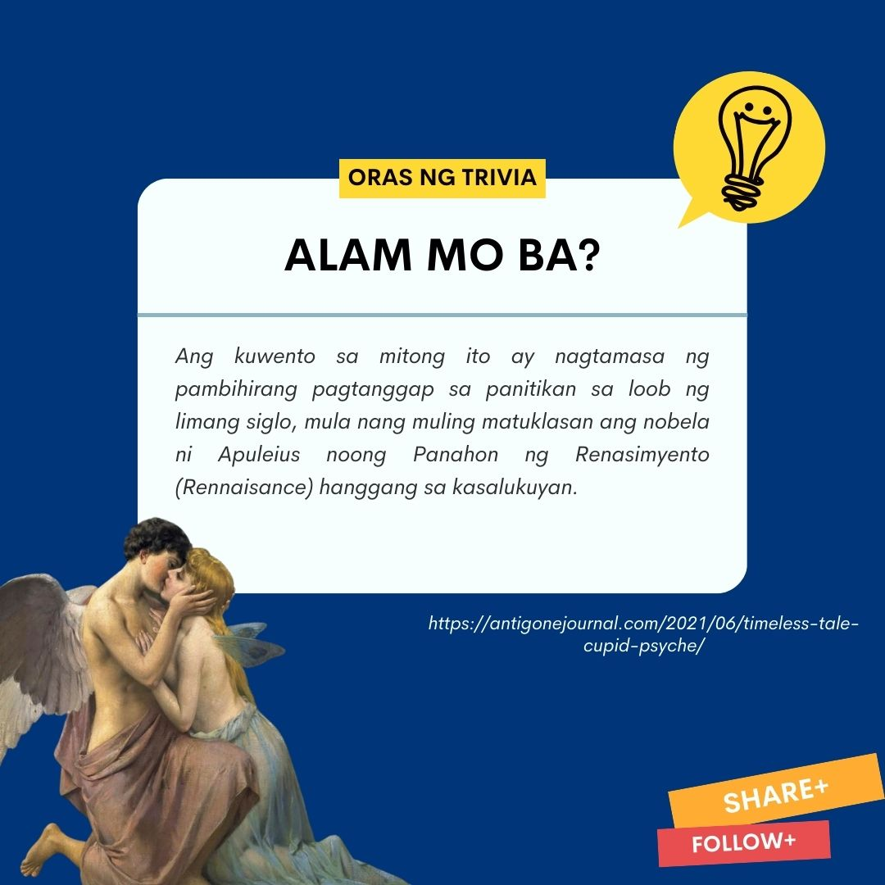
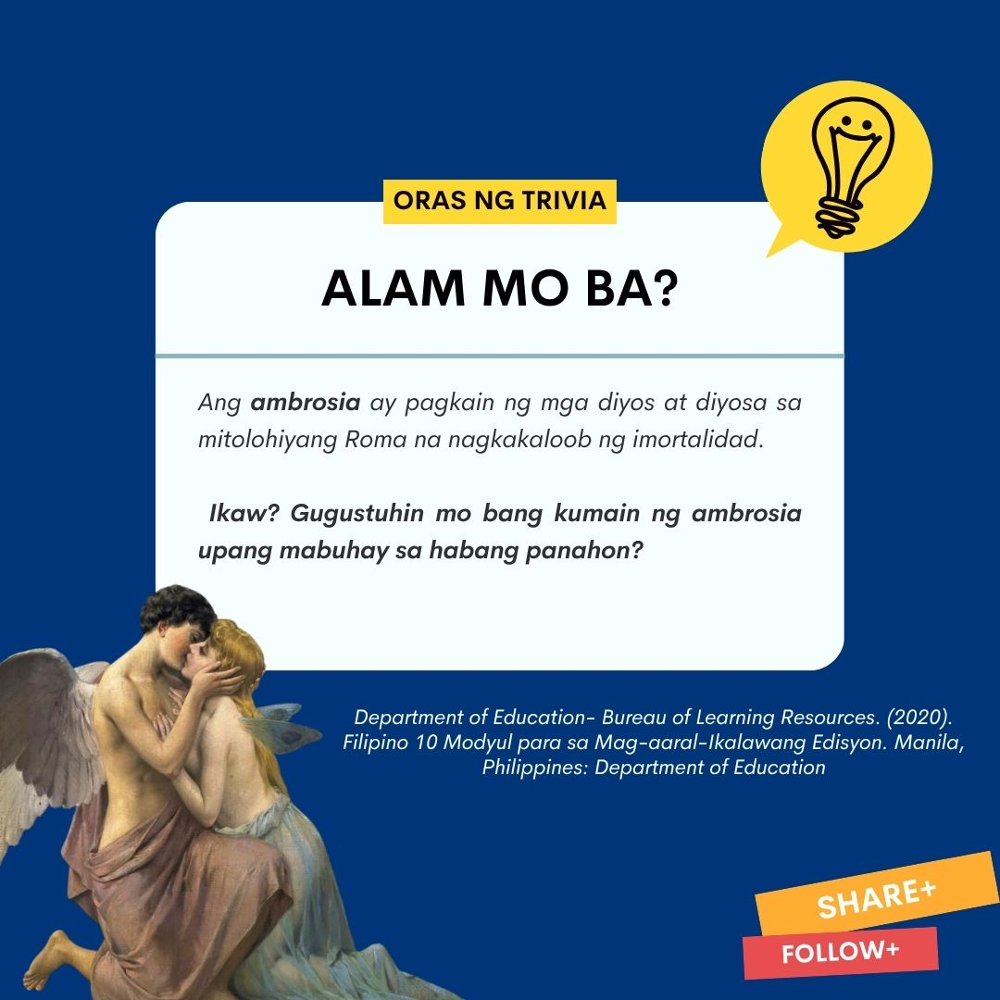
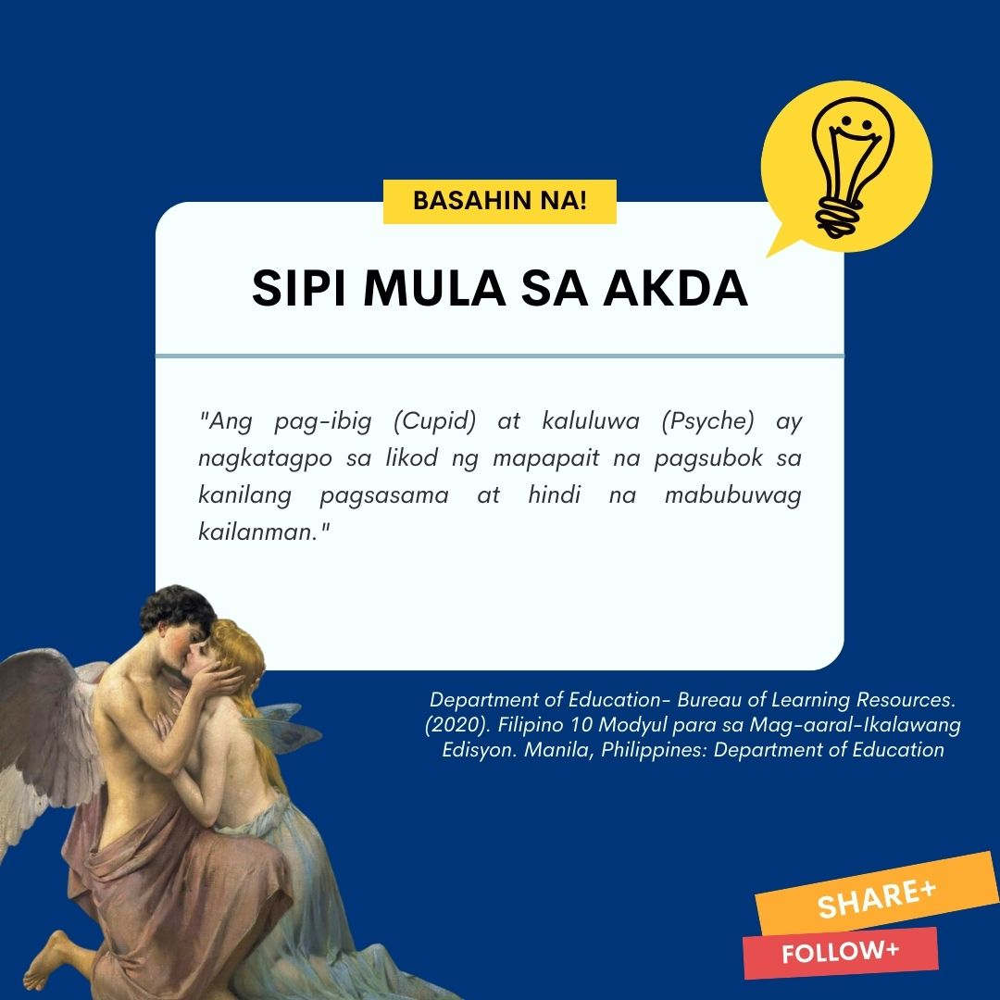
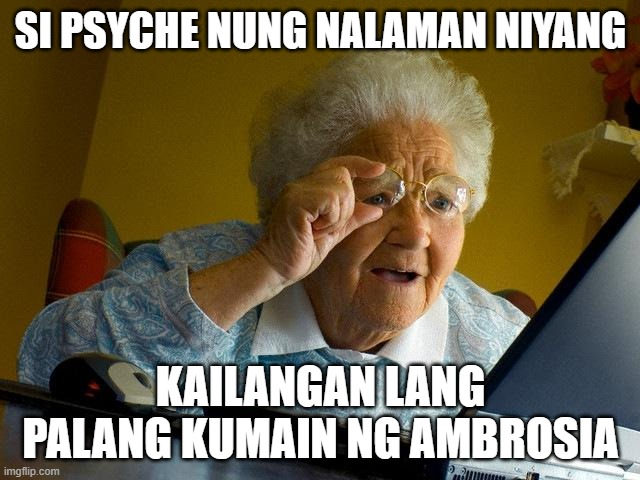
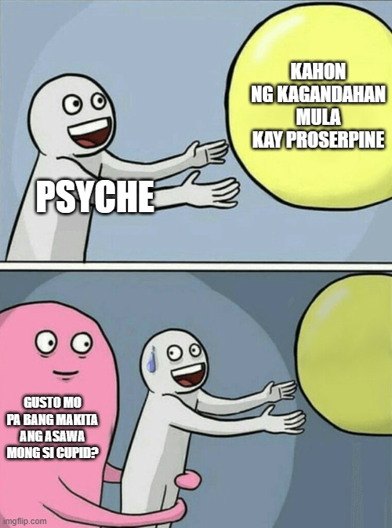

Cupid at Psyche

Cupid at Psyche
Pinagmulan:Romano
Mga Sanggunian
2020: Cupid at Psyche Buod "Department of Education- Bureau of Learning Resources. Filipino 10 Modyul para sa Mag-aaral-Ikalawang Edisyon. Manila, Philippines: Department of Education
TRIVIA BOARD




Mitolohiyang Rome ( isinalaysay ni Apuleius, isang manunulat na Latino; bahagi lamang ng nobelang Metamorphoses na kilala sa tawag na “The Golden Ass” (donkey)
Noong unang panahon, may hari na may tatlong magagandang anak na babae. Ang pinakamaganda ay ang bunsong si Psyche. Sinasabi nila na maging si Venus na diyosa ng kagandahan ay di makapantay sa kagandahan ni Psyche. Lahat ng papuri ay napunta lahat sa kanya na naging dahilan upang magalit sa kanya ang diyosa. Inutusan niya si Cupid ang kanyang anak upang paibigin ang dalaga sa isang nakatatakot na nilalang. Tumalima agad ang anak, hinanap ang babae at napaibig agad ang diyos sa dalaga nang masilayan nito ang kanyang kagandahan. Nang makauwi si Cupid, inilihim niya sa kanyang ina ang nangyari. Nagtiwala naman ang diyosa sa anak at nanabik sa kahihinatnan ng buhay ni Psyche.
Hindi umibig si Psyche sa isang nakatatakot na nilalang.Wala rin umibig sa kanya at nakontento lamang na pagmasdan at sambahin siya ng mga lalaki. Nabahala ang magulang ni Psyche. Naglakbay ang haring ama ni Psyche upang humingi ng tulong kay Apollo. Humingi siya ng payo sa Diyos at pinayuhan naman niya ito.
Labis ang kalumbayan ng hari. Ipinag-utos ng diyos na bihisan si Psyche ng pinakamaganda niyang damit at ipabuhat at ipahatid ang anak na parang ihahatid sa kaniyang libingan papunta sa tuktok ng bundok. Habang naglalakbay sila,nagluluksa ang lahat sa maaaring mangyari kay Psyche. Sa kabila ng mabigat na sitwasyon, buong tapang tinanggap ng dalaga ang kanyang kapalaran. Pinaalis ni Psyche ang kanyang mga kasama at sinabing masaya niyang haharapin ang kaniyang katapusan. Naghintay si Psyche hanggang magdilim. Takot na takot siya at tumatangis hanggang sa dumating ang malambing na ihip ng hangin ni Zephyr. inilipad at inilapag siya ng hangin sa isang damuhang kasinlambot ng kama at pinahalimuyak ng bulaklak. Nakatulog siya sa kapayapaan ng gabi. Nang magising si Psyche ay natanaw niya ng isang mansyon. Namangha siya dito, yari ito sa pilak at ginto. “Pumasok ka, para sa iyo ang mansyong ito, maligo ka, magbihis at ihanda namin ang piging para sa iyo”, wika ng mga tinig.Nalibang si Psyche sa mansyon at hindi niya namalayan ang paglipas ng oras. Pagsapit ng gabi nangyari ang inaasahan niya.
Naramdaman niya ang pagdating ng lalaki. Tulad ng mga tinig hindi nito nakikita. Sa kanyang paniniwala, hindi halimaw ang lalaki kundi isang mangingibig at asawang matagal na niyang hiniintay. Isang gabi kinausap siya ng masinsinan ng lalaki. “ darating ang iyong mga kapatid upang magluksa sa lugar kung saan ka iniwan,” wika ng asawa “ Subalit huwag na huwag kang magpapakita sa kanila sapagkat magbubunga ito ng matinding kalungkutan sa akin at kasiraan sa iyo,” habilin ng lalaki. Nangako si Psyche na tatalima sa kagustuhan ng asawa. Kinabukasan narinig ni Psyche ang panaghoy ng kanyang mga kapatid. Naantig ang kanyang kalooban. Kinagabihan, nadatnan siyang umiiyak ng kanyang asawa. Sinabi nito sa kanya na maaari na niyang makita ang kanyang mga kapatid, subalit mahigpit ang babala. Pinayuhan niya nang masinsinan si Psyche na huwag siyang pabubuyo kaninuman na subuking sulyapan ang mukha nito. Kung mangyayari ito magdurusa si Psyche sa pagkakawalay sa kanya. “ Nanaisin kong mamatay nang isandaang beses kaysa mabuhay nang wala ka sa aking piling. Pagbigyan mo akong makapiling ang aking mga kapatid. Malungkot na sumang-ayon ang lalaki.
Nagkita ang magkakapatid. Namangha ang kanyang mga kapatid sa ganda ng kanyang tirahan at kayamanan. Tulad ng ipinangako, inilihim ni Psyche ang tungkol sa kanyang asawa. bago umalis ang kapatid ay pianbaunan niya ang mga ito ng mga hiyas. Labis ang pangingimbulo ang naramdaman ng mga ate ni Psyche sa kanya. Binalot ng labis na inggit ang kanilang puso na humantong sa pagpaplano nila ng ikapapahamak ng bunsong kapatid. Kinabukasan ng muling dumalaw ang mga kapatid, binuyo nila si Psyche na dapat niyang malaman ang katotohanan tungkol sa kanyang asawa bago mahuli ang lahat. Pinayuhan nila si Psyche na magtago ng punyal at lampara sa kanyang silid at kapag natutulog ang asawa at makitang halimaw ito ay itatarak ang punyal sa dibdib nito. Magkahalong lungkot at pagkalito at naramdaman ni Psyche. Mahal na mahal niya ang kanyang asawa subalit paano kung halimaw nga ito.
Sa wakas ay mahimbing nang natutulog ang lalaki. Dahan dahan siyang lumapit sa kaniyang asawa.
Laking ginhawa at kaligayahan ang nag-uumapaw sa puso ni Psyche. Hindi halimaw ang kaniyang nakita kundi pinakaguwapong nilalang sa mundo. Nang madapuan ng liwanag ang lalaki ay lalong tumingkad ang kagandahan ng lalaki.Sa labis na kahihiyan at kawalan ng pagtitiwala, lumuhod siya at binalak na saksakin ang sarili. Nang akma niyang itatarak ang punyal sa dibdib, nanginig ang kanyang kamay at nahulog ang punyal. Sa pagnanais na masilayan ang asawa, inilapit niya ang lampara at natuluan ng mainit na langis ang balikat ng lalaki. Nagising ang lalaki at natuklasan ang kanyang pagtataksil. Lumisan ang lalaki nang hindi nagsasalita. Sinundan ni Psyche ang asawa, subalit hindi na niya ito nakita. narinig na lamang niya ang tinig ng asawa,
“ Hindi nabubuhay ang pag-ibig kung walang tiwala,” bago tuluyang lumipad papalayo. “ Si Cupid, ang diyos ng pag-ibig!” ang naisip ni Psyche. “Siya ang asawa ko. Ako na isang hamak lamang ay hindi tumupad sa aking pangako sa kaniya. Mawawala na nga ba siya sa akin? wika niya sa sarili. “ Inipon niya ang kanyang lakas at nagwikang “Ibubuhos ko ang bawat patak ng aking buhay hanapin siya.
Umuwi sa Cupid sa kanyang ina upang pagalingin ang sugat. Nagpupuyos sa galit si Venus at lalong sumidhi ang pagseselos kau Psyche. Determinado si Venus na ipakita kay Psyche kung paano magalit ang diyosa kapag hindi nasiyahan sa isang mortal.
Patuloy na naglakbay si Psyche at pinipilit na makuha ang panig ng mga diyos. Nag-alay siya ng panalangin subalit walang nangyari. Minabuti niyang magtungo sa kaharian ni Venus at ialay ang kaniyang sarili na maging isang alipin. Sa ganitong paraan umaasa siyang lumambot ang puso ni Venus at huhupa ang galit at nagbabakasakali siyang andun si Cupid.
Maraming pagsubok ang ipinagawa ni Venus kay Psyche na impossible nitong magawa sapagkat isa siyang mortal. Subalit napagtagumpayan lahat ito ni Psyche sa tulong ng ilang mga nilalang. Hindi sumusuko si Venus sa pagpapahirap kay Psyche. Ang huling pagsubok ay ang pagkuha ng kagandahan kay Prosepine. Nagawa ni psyche ang pagsubok. Nakuha niya ang kahon ng kagandahan. Nasubok muli ang kanyang karupukan, natukso siyang kumuha ng kaunting ganda sa loob ng kahon, nang buksan niya ang kahon ay nanghina siya at nakatulog.
Sa mga panahong ito ay magaling na si Cupid at sabik na siyang makita ang kanyang asawa subalit ibinilanggo siya ng kanyang ina. Kaya humanap si Cupid ng paraan upang makatakas. Nakita niya ang bukas na bintana at lumabas. Nahanap niya agad si Psyche malapit sa palasyo. Agad niyang pinawi ang pagtulog ng asawa at agad sinilid ang gayuma sa kahon. Bahagya niyang tinusok sa kaniyang busog si Psyche upang magising. Pinagalitan niya ang kanyang asawa dahil sa pagiging mausisa nito na humantong muli sa kanyang kapahamakan. Sinabi niyang magtungo si Psyche sa kaniyang ina at ibigay ang kahon. Dito magtatapos ang pagpapahirap ng kaniyang ina. masayang nagtungo si Psyche sa palasyo samantalang si Cupid naman ay lumipad patungo kay Jupiter. Hiniling niya na tiyaking hindi na sila gagambalain ng kaniyang ina. Pumayag si Jupiter at nagpatawag ng pagpupulong ng mga diyos at diyosa. Ipinahayag niya na sina Cupid at Psyche ay pormal nang ikinasal at wala na dapat gumambala sa kanila maging si Venus. Pinakain si Psyche ng “ambrosia” upang siya ay maging isang imortal na rin.
MEME korner


